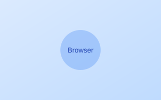
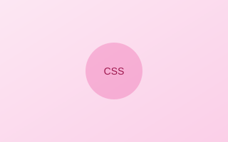
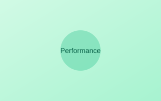

How Browsers Render CSS
Learn what happens between HTML, CSS and pixels in the browser's rendering pipeline.
Discover how CSS delivery affects the way browsers render your page. Join our experiment to measure the real impact of Critical CSS optimization.
Explore the ExperimentThese values represent our starting point before Critical CSS optimization. In the next episode, we'll measure the impact of our changes.
Understanding the browser's rendering pipeline helps us identify optimization opportunities.
The browser fetches the HTML document and begins parsing it into the DOM (Document Object Model).
External stylesheets are downloaded and parsed into the CSSOM (CSS Object Model). This blocks rendering.
The browser combines DOM and CSSOM to create the render tree, containing only visible elements.
The browser calculates element positions and paints pixels to the screen, resulting in First Contentful Paint.
Investigate how modern browsers process HTML, CSS, and JavaScript to render web pages.
Deep dive into CSS parsing, selector matching, and the construction of the CSS Object Model.
Understand which resources block rendering and how to optimize their delivery.
Extract and inline only the CSS needed for above-the-fold content to improve initial render.
Measure Core Web Vitals and understand their impact on user experience and SEO.
Learn tools and techniques for accurately measuring web performance in real-world conditions.

Learn what happens between HTML, CSS and pixels in the browser's rendering pipeline.

Explore how stylesheets affect initial rendering and why CSS is considered render-blocking.

Learn how to measure real browser performance using Chrome DevTools and other tools.
Discover techniques for identifying and extracting the CSS needed for above-the-fold content.
Compare different approaches to loading CSS: preload, async, defer, and inline critical CSS.
Understand LCP, FID, CLS and other Core Web Vitals that measure real-world user experience.
This project is a hands-on investigation into Critical CSS and its impact on web performance. We build real pages, measure their performance, and apply optimizations to understand the actual benefits and trade-offs.
Unlike toy demos, we use realistic pages with substantial CSS to see how Critical CSS performs in production-like scenarios. Our goal is to provide honest, data-driven insights that help you make informed decisions about CSS optimization.
Throughout this series, we'll explore Critical CSS in different environments: vanilla HTML/CSS, React, Tailwind, and Next.js, to understand how the approach changes with modern frameworks.